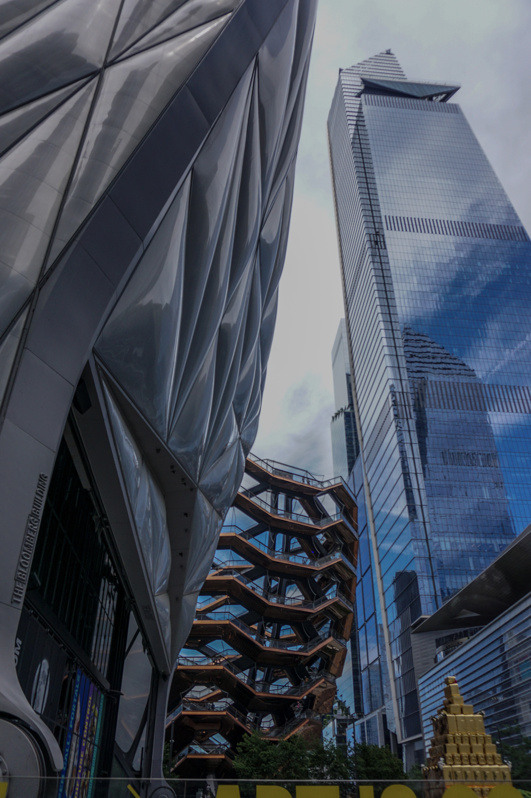

Thin Film Synthesis
Fabrication of metal and 2D TMDC thin films, including MoS2-based systems, using CVD and electron-beam evaporation for functional energy surfaces.
PhD Candidate | University of Illinois Chicago
Materials engineer focused on 2D material thin films, vacuum coating, and electrochemical energy systems for batteries, thermionic devices, and nanoscale energy applications.

Current Work
Fabrication of metal and 2D TMDC thin films, including MoS2-based systems, using CVD and electron-beam evaporation for functional energy surfaces.
Materials design and testing for Li-ion, Li-air, Na-ion, and advanced cathode systems, with an emphasis on electrochemical performance and failure analysis.
SEM-EDS, AFM, Raman, XRD, contact profilometry, maskless photolithography, cleanroom processing, and electrochemical measurements.
Selected Publications
Experience
Current CHEETA Lab member working on vacuum coating of metals and 2D material thin films for energy applications in thermionics, batteries, and related nanoscale systems.
Supported cathode design and characterization, electrochemical testing, failure analysis, ML-assisted powder data analysis, SOP development, and cross-functional cathode pretreatment work.
Developed Mo-based Janus cathode materials for Li-air batteries, synthesized and characterized 2D chalcogenide nanomaterials, and measured electrochemical performance through CV, EIS, GCD, and cycling studies.
Worked on cobalt-free layered cathode materials, slurry preparation, coin-cell assembly, post-failure characterization, and electrochemical/physical analysis of battery electrodes.
Recognition
Recent award
Recognized by the Society of Vacuum Coaters Foundation for graduate work connected to vacuum coating technology and thin-film research.
Teaching assistant for Thermodynamics and Heat Transfer Lab at UIC.
Volunteer teaching at Chicago Persian School since 2023.
Mentored undergraduate students and contributed to grant proposals.
Training
University of Illinois Chicago | PhD, Mechanical Engineering | 2022 - present
Sharif University of Technology | MSc, Materials Engineering | 2018 - 2021
University of Tehran | BSc, Materials Engineering | 2014 - 2018
Beyond the Lab



Outside research, Pardis documents color, texture, and quiet everyday compositions through photography.
@paradise_photolab